| 상품 | 군마트 | 쿠팡 | 차이 | |
|---|---|---|---|---|
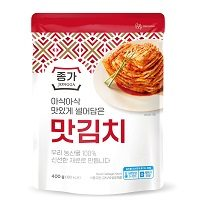 | 대상 종가 맛김치 400g | 2,970원 | 6,730원 | -56% |
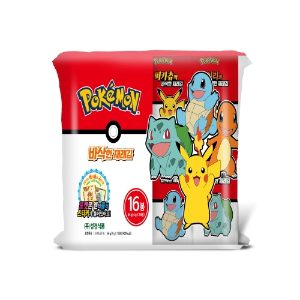 | 성경식품 포켓몬김 16개 64g | 3,960원 | 8,380원 | -53% |
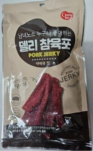 | 청호 델리참육포 80g | 3,140원 | 6,250원 | -50% |
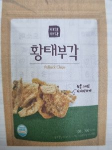 | 씨월드 황태부각 100g | 3,300원 | 6,450원 | -49% |
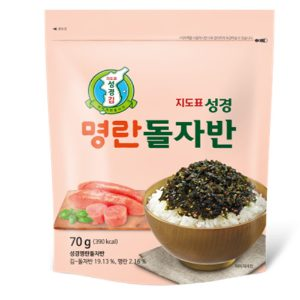 | 성경식품 명란돌자반 70g | 1,930원 | 3,470원 | -44% |
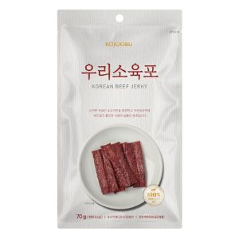 | 코주부비엔에프 우리소육포 70g | 4,860원 | 8,650원 | -44% |
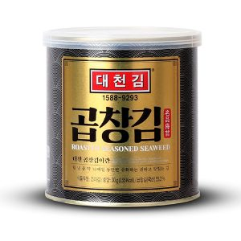 | 대천김 곱창김 30g | 3,200원 | 5,110원 | -37% |
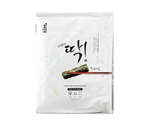 | 새벽바다 딱김 조미김 25g | 1,890원 | 3,000원 | -37% |
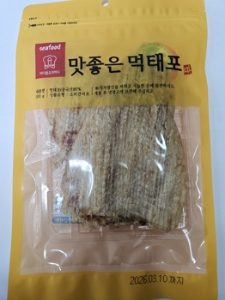 | 진주식품 맛좋은 먹태포 100g | 4,750원 | 7,400원 | -36% |
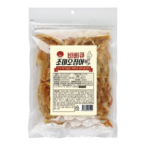 | 바베큐 조미 오징어 300g | 11,660원 | 15,960원 | -27% |
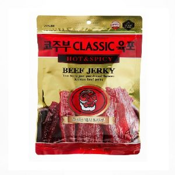 | 코주부 CLASSIC육포 Hot & Spicy 130g | 6,800원 | 9,080원 | -25% |
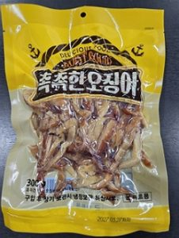 | 진주식품 촉촉한 오징어 300g | 11,230원 | 14,925원 | -25% |
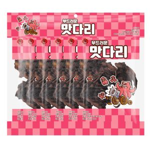 | 코주부비엔에프 맛다리 120g | 5,960원 | 7,640원 | -22% |
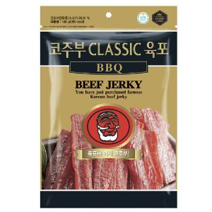 | 코주부 CLASSIC 육포 BBQ 130g | 7,210원 | 9,080원 | -21% |
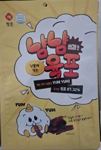 | 청호 냠냠육포 120g | 4,560원 | 5,632원 | -19% |
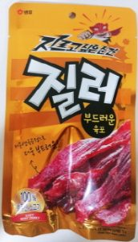 | 샘표식품 질러 부드러운 육포 70g | 4,300원 | 4,837원 | -11% |
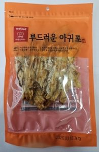 | 진주식품 부드러운 아귀포 100g | 4,980원 | 5,560원 | -10% |
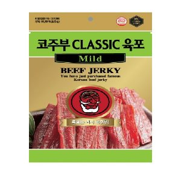 | 코주부비엔에프 코주부CLASSIC육포Mild 130g | 8,030원 | 8,625원 | -7% |
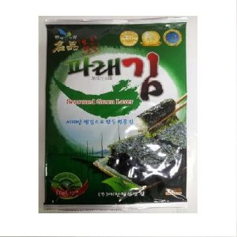 | 대천청정맛김 대천청정파래맛김 20g*1봉 | 1,150원 | 1,173원 | -2% |
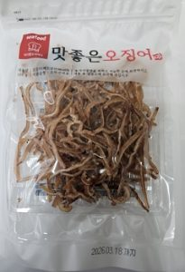 | 진주식품 맛좋은 오징어 150g | 9,980원 | 9,980원 | +0% |
김·건어물 말고 다른 것도
더 이상 직접 비교하지 마세요.
군마트 상품을 한곳에 모아 PX 가격과 온라인 가격을 쉽게 비교할 수 있습니다.
이게 실제 화면이에요. 상품을 누르면 바로 열립니다.
국방가족 분들이 조금이라도 편하게 군마트를 이용하셨으면 하는 마음으로 만들었습니다.
국방가족을 위한 작은 재능기부입니다.